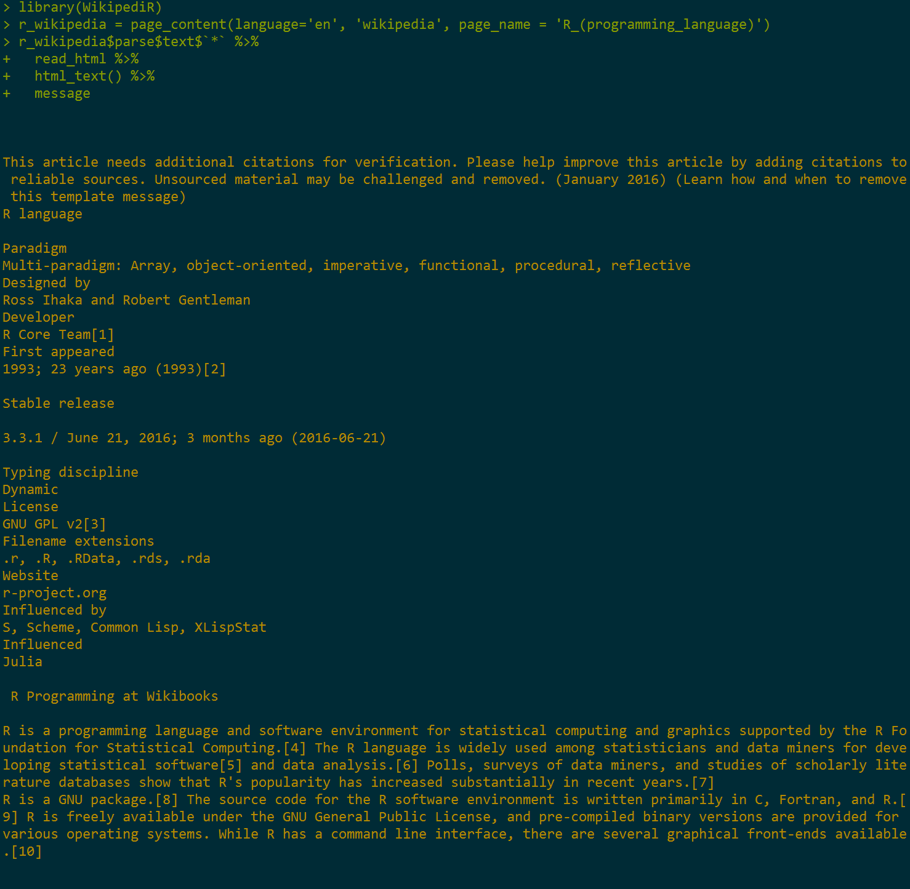

APIs
An application programming interface allows one to interact with a website9. In the simplest situation, this is merely a url-based approach to grabbing what you need.
As an example consider the following generic URL:
http://somewebsite.com/key?par1;par2
The key ingredients are:
http://somewebsite.com/the base URLkeysome authorization component?par1;par2the parameters of interest that specify what you want to grab from that website.
With R, once we have authorization we can then simply feed the parameters that tell the server what data to provide. We can do this in a raw fashion, where we make the URL, or web address10, that has the necessary specification, and then simply take what it provides. Alternatively, there are many R packages to make the process easier for things like Twitter, Qualtrics, and many other websites.
Raw Example
Basic functions of the raw approach are requests to a server things like GET and POST, commands that tell the server to provide something or perhaps provide data to it. In the following, api_key11 is an R object with a character string of the key provided to me by the website. I use the httr package for the web functionality to acquire the content. In particular, the GET function retrieves whatever information is noted by the request/url. Additional arguments or modifications to the base URL can also be provided, which is what the query part does.
# raw approach
library(httr)
most_viewed_base = GET('https://api.nytimes.com/svc/mostpopular/v2/mostviewed/all-sections/30.json', query=list(`api-key`=api_key))
# see the url created
# most_viewed_base$url # tacks on ?api-key=YOURAPI at the endAt this point, most_viewed_base is a response class object, a list with several pieces of information including what we want, which is the content.
str(most_viewed_base[-1], 1)List of 9
$ status_code: int 200
$ headers :List of 15
..- attr(*, "class")= chr [1:2] "insensitive" "list"
$ all_headers:List of 1
$ cookies :'data.frame': 0 obs. of 7 variables:
$ content : raw [1:54087] 7b 22 73 74 ...
$ date : POSIXct[1:1], format: "2016-10-16 18:25:01"
$ times : Named num [1:6] 0 0.063 0.11 0.219 0.64 0.718
..- attr(*, "names")= chr [1:6] "redirect" "namelookup" "connect" "pretransfer" ...
$ request :List of 7
..- attr(*, "class")= chr "request"
$ handle :Class 'curl_handle' <externalptr> However the content’s in binary, and to get it into a useful state we’ll use the content function. The rest of the code just takes the title and arranges it by date.
most_viewed = content(most_viewed_base)
lapply(most_viewed$results, function(x) data_frame(title=x$title, date=x$published_date)) %>%
bind_rows() %>%
arrange(desc(date))# A tibble: 20 × 2
title date
<chr> <chr>
1 Latest Election Polls 2016 2016-10-16
2 2016 Election Forecast: Who Will Be President? 2016-10-16
3 Two Women Say Donald Trump Touched Them Inappropriately 2016-10-13
4 The New York Timess Lawyer Responds to Donald Trump 2016-10-13
5 Donald Trumps Sad, Lonely Life 2016-10-11
6 Paul Ryan Turns Focus From Donald Trump to House Races, Roiling G.O.P. 2016-10-11
7 Presidential Debate: Heres What You Missed 2016-10-10
8 Fact Checks of the Second Presidential Debate 2016-10-09
9 Donald Trump, Groper in Chief 2016-10-09
10 Donald Trump Apology Caps Day of Outrage Over Lewd Tape 2016-10-08
11 A Letter to the Doctors and Nurses Who Cared for My Wife 2016-10-06
12 Donald Trump Tax Records Show He Could Have Avoided Taxes for Nearly Two Decades, The Times Found 2016-10-02
13 After a Disappointing Debate, Donald Trump Goes on the Attack 2016-09-28
14 Did You Miss the Presidential Debate? Here Are the Highlights 2016-09-27
15 Our Fact Checks of the First Debate 2016-09-27
16 Why Donald Trump Should Not Be President 2016-09-26
17 Video by Wife of Keith Scott Shows Her Pleas to Police 2016-09-24
18 Angelina Jolie to Divorce Brad Pitt, Ending Brangelina 2016-09-22
19 Ahmad Khan Rahami Is Arrested in Manhattan and New Jersey Bombings 2016-09-20
20 Powerful Blast Injures at Least 29 in Manhattan; Second Device Found 2016-09-18The community API can get user comments and movie reviews. In the following case, it will need a specific date to retrieve comments.
comments_base = GET('http://api.nytimes.com/svc/community/v3/user-content/by-date.json', query=list(date=Sys.Date()))
comments = content(comments_base)
sapply(comments$results$comments, function(x) x$commentBody)[1:5][1] "Until the popular pressures from below force the ruling Saudi dynasty to undertake such democratic reforms as could widen popular participation in decision making and unshacle the society from the repressive tradition rooted in obscurantist social religious practices, the cosmetic reforms being pushed by the Deputy Crown Prince Salmon would mean nothing except a part of power struggle to gain supremacy. "
[2] "Martin, I did the puzzle tonight while watching the game. Tis a far, far better thing what Montero did than he has ever done before."
[3] "Higher pays and bigger chances of advancedment could pay off when two conditions are met. <br/><br/>First, a pay rise is meaninful in relative terms, not absolute terms as time progresses. <br/><br/>The morale for employess is boosted when they are paid higher at their jobs than other similar jobs. <br/><br/>If they could get an equivalent pay at another job, they couldn't find any reason to work hard. That is, they could leave the job in favor of another one with a greater pay. <br/><br/>The implication is that job morale stimulating efficiency wage matters when it is bigger than on average and that, if average wage levels in an industry rise to a point of no significant differences, its impact could noticeably decline, with increased consumers prices levels. <br/><br/>Second, even if higer paid employees work hard, the resulting hike in sales and profit for employers is possible when the economy is high. In a slow economy, higher pays would put more of a burden on employers as the aggregate demand is meager. <br/><br/>So employers are tempted to downsize and cut payroll even if such action could trigger a vicious cycle of recession. After all, businesses are just profit maximizers, not a coordinator of macroeconomic order. <br/><br/>Finally, if a business is on the export side, raising pays for workers will be less likely. In a globalized cutthroat competition, price is often a determinant of competitveness, thus higher labor costs leading to higher prices, lower sales. <br/><br/>In short, the issue is really tough."
[4] "This kind of comparison has occurred to me as well. There are really too many points to compare--another that comes to mind is, what if Hillary Clinton dodged every question and criticism by bringing up an angry charge about her opponent's history? And never, ever, accepted the blame for anything?"
[5] "Mr. Trump is old, old school. Instead of Mrs. Clinton's name, substitute the name of any modern male presidential candidate. Imagine the howls? Somehow, this man has tapped into an ugly American vein where his adherents will minimize and justify any behavior no matter how lurid. Still, others, will blindly vote Republican no matter what. Millions of Americans are voting for this lunatic. I say, Love it, or move back to Europe." The API documentation doesn’t make obvious what the date format should be, how the comments are chosen (aside from being taken from some section of the paper), or what the limits are. As mentioned previously, this is typical API documentation in my experience.
R packages
Many R packages allow extremely easy access to various websites through their API. Usually all it takes is acquiring the authorization and the package will do the rest. It might only be marginally less effort than the raw approach we did before, but can make things more efficient in the long run (assuming the package is kept up to date).
New York Times Article Search
The following is an example of accessing the New York Times article search API12. Using the rtimes package, we can use a function similar to any other in R. In this case we need a query, beginning date and an end date to collect articles that contain the text of the query. Note that it still requires an key, but that’s not shown here.
library(rtimes)
article_search = as_search(q="bomb", begin_date = '20160918', end_date = '20160919')[-(1:2)]
lapply(article_search$data, function(x) data_frame(snippet=x$snippet, date= x$pub_date)) %>%
bind_rows() %>%
arrange(desc(date))# A tibble: 10 × 2
snippet
<chr>
1 New York City police investigating a bombing in Manhattan over the weekend said on Monday they wanted to question two me
2 Long before Ahmad Rahami became notorious as the suspect in this weekend's bombings in and around New York, his family w
3 Syrian or Russian warplanes bombed the city of Aleppo and nearby villages on Monday, the Syrian Observatory for Human Ri
4 Democrat Hillary Clinton on Monday accused Republican Donald Trump of aiding Islamic State recruitment, while Trump said
5 The Latest on explosive devices being found in two states (all times local):
6 Mayor J. Christian Bollwage of Elizabeth, N.J., described how a bag containing pipe bombs was discovered near a train st
7 Amnesty International says it has evidence that a Saudi-led coalition battling Yemeni rebels dropped a U.S.-made bomb on
8 Saturday nights explosion in the Chelsea neighborhood of Manhattan occurred just outside a building that is home to man
9 The authorities used a total containment vessel to haul the device to the Bronx before passing it along to the Federal
10 A Somali general and at least seven of his bodyguards were killed on Sunday when their vehicle was rammed by a car bomb
# ... with 1 more variables: date <chr>Wikipedia
With the WikipediR package, getting the whole content of a page is just one possibility, and it feeds nicely into rvest functionality for more processing. Here the package’s page_content function will extract information from the page. The ‘text’ element is the html content, which we can then feed to the previously used rvest functions. I show only a snippet of the output.
library(WikipediR)
r_wikipedia = page_content(language='en', 'wikipedia', page_name = 'R_(programming_language)')
str(r_wikipedia[[1]], 1) # inspect
r_wikipedia$parse$text$`*` %>%
read_html %>%
html_text %>%
message
Qualtrics
Qualtrics is a survey software which one can use to create and disseminate surveys and the data from them, and is a very useful tool in this regard. The University of Michigan has a license, and so anyone at the university can use it, which is why I provide a generic example here.
The qualtricsR13 package makes it easy to import data from and export surveys to Qualtrics, as well as functionality to create a standard survey within R. As before you’ll need proper authorization, but then it can be straightforward to grab your data from Qualtrics without having to go to the website.
library(qualtricsR)
mydata = importQualtricsData(username = "qualtricsUser@email.address#brand", # example micl@umich.edu#umich
token = "tokenString", surveyID = "idString") # your token from QualtricsOthers
Note that there are many R packages that work with various APIs, so if you’re looking to work with data from a site that has an API, definitely see if something already exists. If it is a very popular website, you are probably not the first person using R that wants to access its data.
Issues
Documentation
One issue I commonly find with APIs is that often they are generally poorly documented beyond a certain level of initial detail, e.g. often telling you what the parameters are but not the values they can take on. As an example, if something says it wants a date, you may be left to figure out what date format is expected. Sometimes I feel that developers spend so little effort it seems they don’t actually want people to use the API. Just be aware that you may still have some guesswork left even when a lot of information is provided initially.
API Changes
Many websites cannot leave the API alone very long. Sometimes this is due to actual content changes that require subsequent changes in the API, sometimes it might reflect a server side issue that needs to be addressed. Often a reason isn’t given. The gist is that you shouldn’t be surprised if an API package in R doesn’t work if it hasn’t been updated recently. As the code is often pretty straightforward, you may be able to easily tweak a function to work with the current API.
Broken API
Sometimes someone fiddles with things they shouldn’t and you start getting errors. As an example, while developing this document, NY times article search would start providing different errors depending on the combination of start and end date (forbidden, API rate exceeded, no content etc.). It is not necessarily the case that you are doing something incorrectly.
Restrictions
Note that there are almost always restrictions. For example, the New York Times API limits requests to 1000 calls per day, and five calls per second. Unfortunately these are typically not based on actual testing of what modern servers could handle and are often overly restrictive (and overly optimistic in estimates of web traffic) in my opinion. I mention it though because you’ll need to plan ahead. If you need a 1 million requests, but the API restricts you to 1000 a day, you’ll obviously need some other way to get the data you want. A simple request to the website developers for more flexibility might be all that is needed.
APIs are much more general than just the Web version described here, in that they allow a means of interaction with anything- operating system, software, hardware etc. For our purposes though, it usually boils down to the examples above.↩
Technically uniform resource locator.↩
The reason you don’t see the key is that, like passwords, you should not provide your keys to others. They provide a means for you to interact with the website, not other people.↩
There are several APIs for different types of content.↩